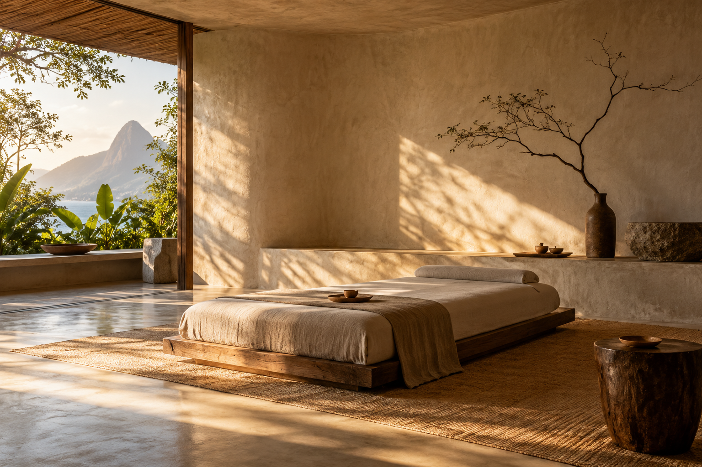
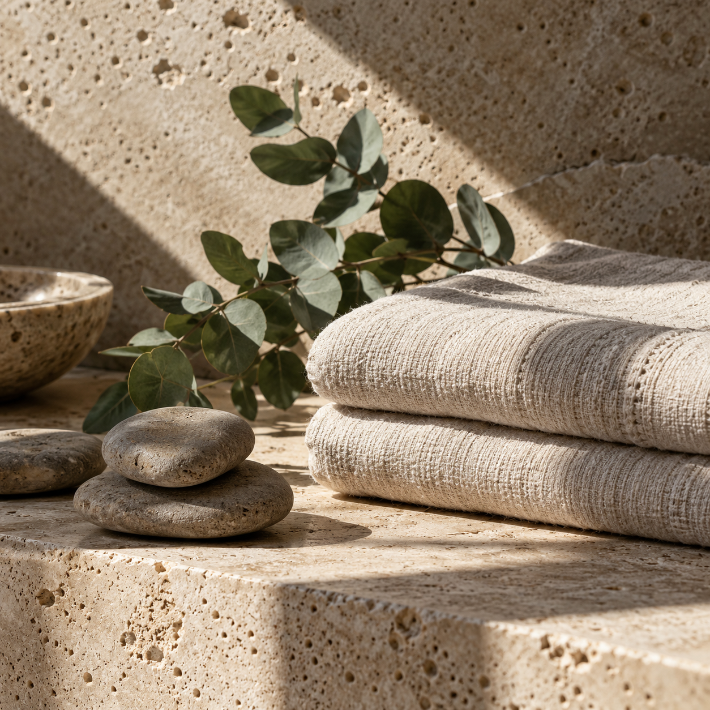
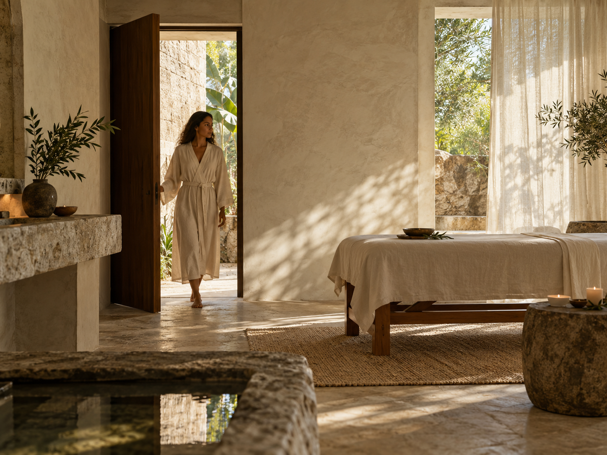

PAUSE · RESPIRE · RECOMECE
Um tempo inteiro
para você.
Rituais de bem-estar que respeitam seu corpo, seu ritmo e sua rotina.
CONHECER RITUAISO ESPAÇO ORIGEM
Bem-estar é presença.
Um espaço calmo, técnica cuidadosa, produtos naturais e escuta de verdade.
UMA PAUSA NÃO PRECISA SER PEQUENA
O corpo entende quando há espaço.
Este bloco usa foto, overlay e altura própria para criar uma pausa sensorial no fluxo da página.
BEM-ESTAR COM INTENÇÃO
Rituais para voltar ao eixo.
TEXTURAS DA PAUSA
Um espaço que desacelera.



“Cuidar de si também é criar espaço para o que importa.”
A SUA PAUSA COMEÇA AQUI
Reserve seu momento.
Escolha o ritual e siga para o agendamento completo.
VER AGENDAVisitePinheiros · São Paulo
ConverseWhatsApp · (11) 95555-0202
HoráriosTer–Sáb · 9h às 19h